可编辑，而非概念效果图
六房与塔体代理实际存在，最终候选在独立 Blender 2.93.18 进程重载并核对对象、岩核签名和相机。原岩核、旧组合及正式 UE 工程保持只读。
ENVIRONMENT DESIGN × TECHNICAL ART / RESEARCH IN PROGRESS
从灯塔聚落的空间关系，到每一次保存、重载与几何检查。
让环境设计不止停留在一张好看的画面。
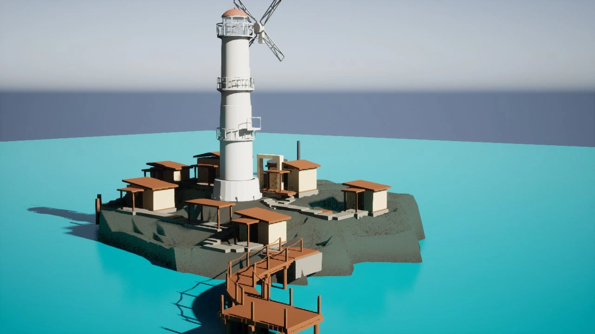
THE PROJECT
Tidemark 是个人海岸环境设计与技术美术研究。美术问题是：建筑、岩岸和登陆路线如何形成可信的空间？工程问题是：怎样知道一次修改确实保存、没有破坏保护基线，而且值得继续？
当前 G012 仍为 retained visual baseline，不是 canonical promotion。新的 C+B / R5 已完成独立建筑组合与局部 LookDev，但仍是 Art PARTIAL 的 Blender 研究分支，未进入正式 UE 集成。
02 / FORM DEVELOPMENT
同一 Hero 机位的真实 Blender 输出。
拖动分界查看 R1 → R5；不是从灰模变成成品。
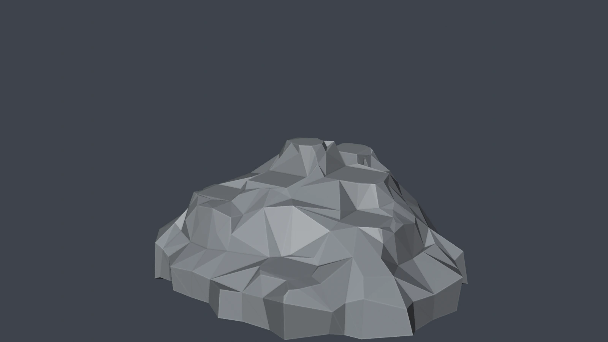
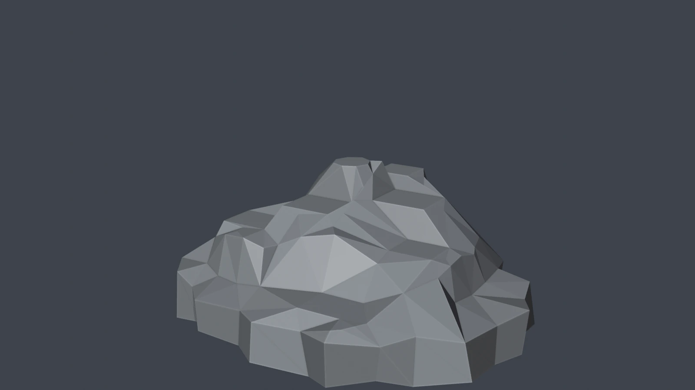
R1 / BEFORER5 / RESEARCH完整 16:9 原始画幅；同名固定相机，非原画像素标定。未启用 JavaScript 时可查看静态图像；打开独立前后对照图 ↗
B2 方向保留高背肩、偏置高点、前低后高的三级关系与七个规划区域。R2 研究基础外侧肩部，R3 调整面流，R4 研究岸线，R5 将有效局部变化组合。面数不是自然度指标：晶体感、规则承载区和水下裙边依然需要设计修正。
ROCK × SETTLEMENT — ART DEVELOPMENT
Blender Settlement Art LookDev — Research Candidate
Art Candidate / Human Review Pending
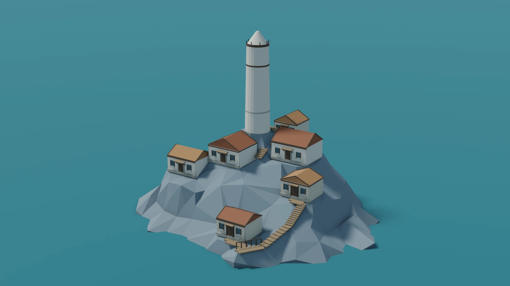
原六房中心、尺寸、楼面与屋脊方向保持不变。独立候选加入真实檐口、门廊托架、石砌墙基、入口立面与木质连接。建筑仍共享较多模板语汇；岩核大形没有重做，尚未达到最终环境美术。
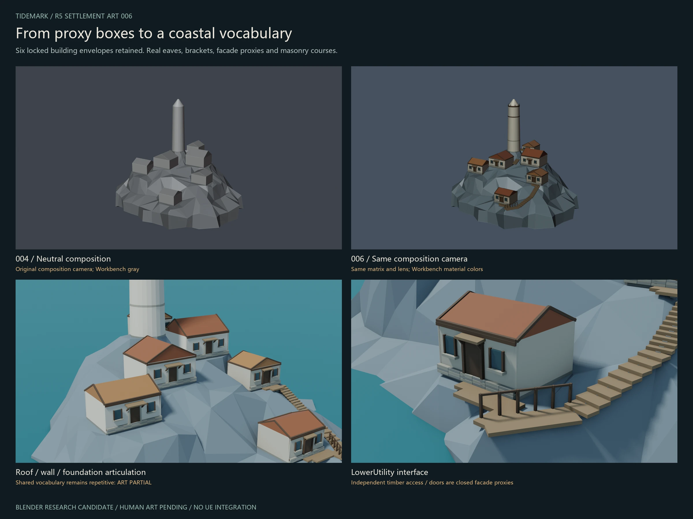
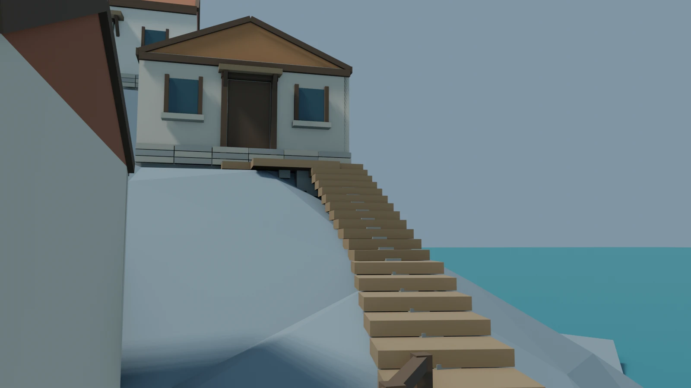
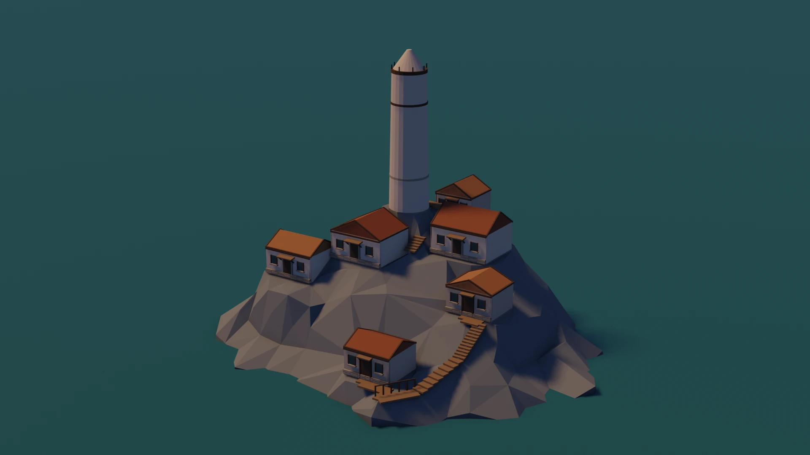
六房与塔体代理实际存在，最终候选在独立 Blender 2.93.18 进程重载并核对对象、岩核签名和相机。原岩核、旧组合及正式 UE 工程保持只读。
三组台阶、两条入口连接候选和局部平台有实际几何。六段主路线因岩面侵入未建立；门仍是封闭立面代理，不能宣称建筑可进入或全岛通行。
首轮世界原点旋转错误被真实图片发现，失败证据保留。修正后的踏板另做实际变换和射线高度核验；有限采样不是完整自交、结构或碰撞认证。
路线与台地 · 保留失败的人眼对照 · 原八机位 · 初次错误与修正证据 · 研究与边界说明
ART PARTIAL / HUMAN PENDING · Collision / Walkability NOT CERTIFIED · UE Integration NOT EXECUTED · No Canonical Promotion
03 / TECHNICAL ART
在锁定规划约束下构建真实网格，检查连通分量、退化面、非流形边、法线与体积。有限自交检测保留其覆盖边界，不宣称严格数学证明。
Implemented in task-specific scripts每个岩核候选记录 511 个规划接触采样。采样通过只表示这些位置的几何关系，不等于真实建筑整体承载、碰撞或可行走认证。
Historical measured evidence / scoped独立 Blender 进程从磁盘重载，核对几何签名与场景对象，再输出原八机位。截图、日志和技术状态一起归档；技术通过不代替人工美术审查。
Fresh reload / multi-camera evidence前四项已有局部研究证据；R5 聚落组合与独立重载已完成，建筑与路线仍为研究候选。Human Art 尚待验收，UE 集成未执行。Agent 不拥有最终美术批准权。
04 / EVIDENCE, NOT JUST A HERO
背面、侧面与人物眼高也参与评审。
这些视角暴露问题，而不是为结果背书。
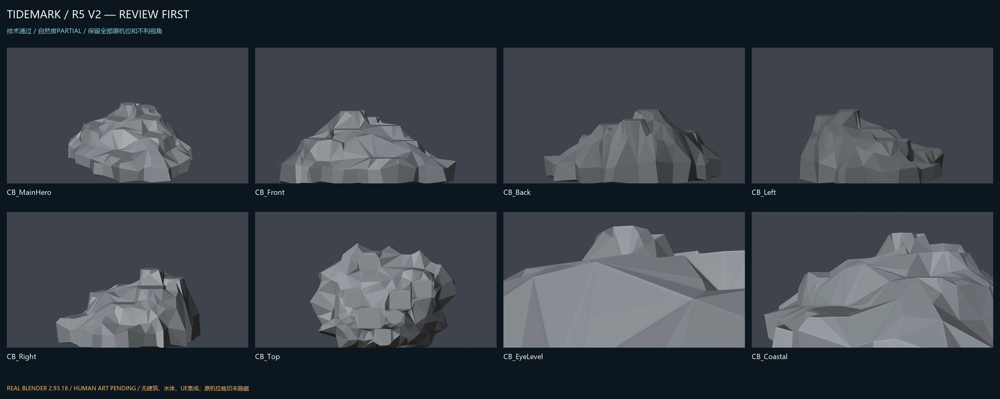
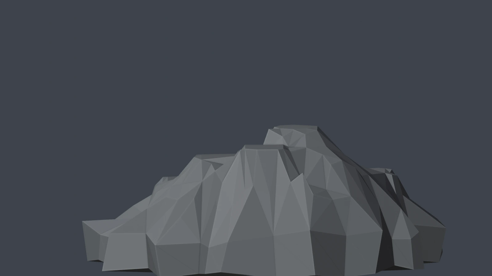
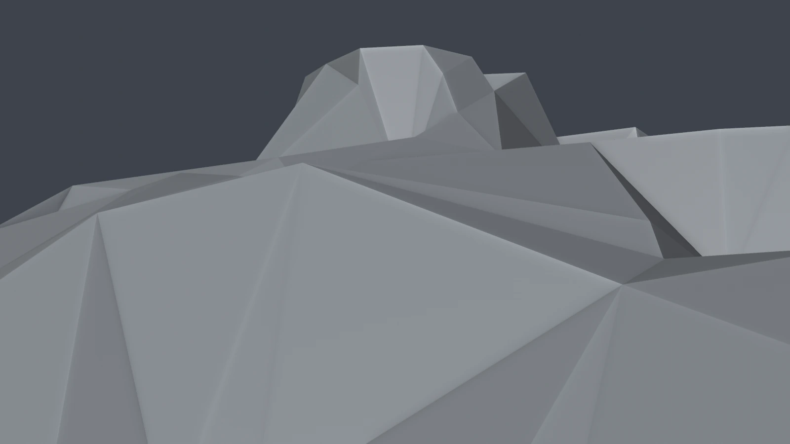
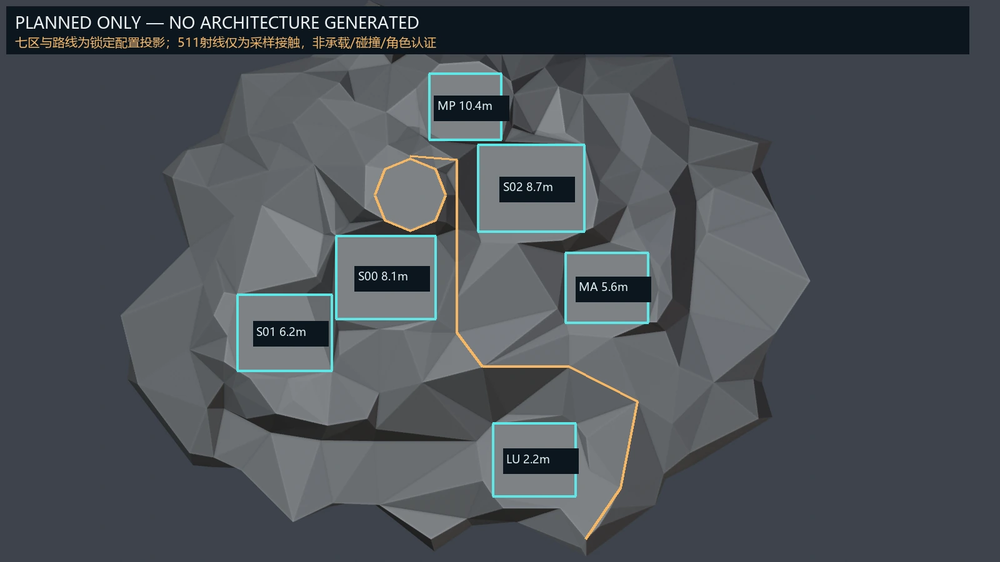
05 / AN HONEST CHECKPOINT
2026.10.19 / Portfolio checkpoint
环境艺术与工程证据，分别评价。
NEXT MILESTONE
真实组合和局部美术研究现已具备证据。下一步由 Human 审查建筑重复、未连通路线和人眼遮挡，再决定是否继续几何整合。没有完成的步骤，不用一张渲染图跳过去。